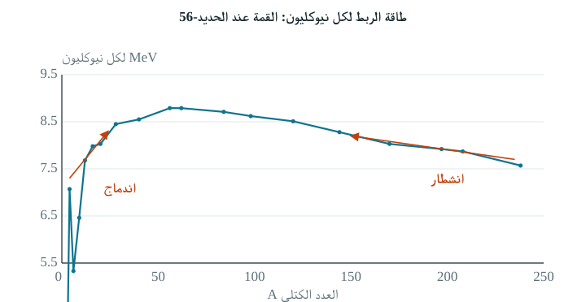

الطاقة النووية
Nuclear energy
الطاقة المتحرّرة بكميات معتبرة في العمليات التي تمسّ نوى الذرات، وأبرز طريقين لها الانشطار المنضبط والاندماج.
الطاقة النووية هي الطاقة المنبعثة في العمليات التي تؤثر في نوى الذرات، وهي النوى الكثيفة في مركز الذرة. الطريق الأول هو الانشطار: تمتصّ نواة ثقيلة نيوترونًا فتنشطر إلى نواتين أخفّ مع نيوترونات إضافية وطاقة، وإذا بقي ما يكفي من النيوترونات لتحفيز انشطارات تالية نشأ تفاعل متسلسل. يُضبط هذا التفاعل في المفاعلات بوسائط تمتصّ الفائض من النيوترونات، فتصبح النتيجة حرارةً تُدار بها دورة بخار. الطريق الثاني هو الاندماج: اندماج نوى خفيفة لصنع نواة أثقل، وهو مصدر طاقة الشمس والنجوم، لكن إنتاجه على نحو يحقق اكتفاءً طاقيًّا تجاريًّا لم يتحقّق بعد. الفرق العملي بين المسارين في يد المهندس: الانشطار تقنية تشغيل قائمة، والاندماج مسألة بحث وهندسة مفتوحة.
كيف تعمل الظاهرة؟
مصدر الطاقة النووية فرق الكتلة: كتلة النواة أقل من مجموع كتل نيوكليوناتها المنفصلة، والنقص يُحرَّر طاقة ربط وفق E = Δm·c². الانشطار يقسّم نواة ثقيلة إلى نواتين أقرب إلى قمة منحنى الربط فينقص النقص الكتلي ويُتحرَّر نحو 200 MeV لكل انشطار. الاندماج يجمع نوًى خفيفة فيصعد على المنحنى محرّرًا طاقة أكبر لكل نيوكليون. القمة عند الحديد-56 (8.79 MeV لكل نيوكليون) هي الحدّ الذي لا يُربح بعده شيء: ما فوقه ينشطر، وما دونه يندمج.
العلاقة بالأرقام
1 MeV = 1.602×10⁻¹³ J. انشطار U-235 يحرّر ≈200 MeV لكل نواة، أي 8.2×10¹³ J/kg — يقابل 2,700 طن مكافئ TNT لكل كيلوغرام. اندماج الديوتيريوم والتريتيوم يحرّر 17.6 MeV لكل تفاعل، أي 3.4×10¹⁴ J/kg. الطاقة النوعية للفحم 2.4×10⁷ J/kg، أي أن وقودًا نوويًّا واحدًا يعادل ملايين أضعافه. ومعامل التحويل c² = 8.99×10¹⁶ m²/s² هو سبب كون الفقد الكتلي بنسبة 0.1% كافيًا.
مفاهيم متقاربة
لا تُخلط الطاقة النووية بالإشعاع: الإشعاع ناتج ثانوي يُحمل بالجسيمات والفوتونات، بينما الطاقة تُحرَّر من فرق الكتلة. ولا تُخلط بالطاقة الحرارية: المفاعل يحوّل الطاقة النووية إلى حرارة ثم بخار ثم كهرباء، وكفاءة التحويل الحقيقية 33–37% فقط في مفاعلات الماء المضغوط، فالباقي حرارة مهدورة. والانشطار ليس «تفتيتًا» عشوائيًّا بل تفاعل بمقطع عرضي يتبع طاقة النيوترون، ويحتاج نيوترونًا بطيئًا في المفاعلات الحرارية.
حدود التطبيق
الاحتياطي ليس لانهائيًّا في تصميمات الجيل الحالي: اليورانيوم-235 أقل من 1% من اليورانيوم الطبيعي، والمفاعلات السريعة والمولّدات (breeders) تُوسّع الأفق نظريًّا لكنها تواجه قيودًا هندسية واقتصادية وسياسية. والطاقة النووية لا تُنتج كربونًا تشغيليًّا لكنها تُنتج نفايات نصف عمرها عشرات آلاف السنين، ولذلك تُطرح مسألة التخزين الجيولوجي لا مسألة الوقود. ولا تزال مسألة التبريد والسلامة التشغيلية تحكم التصميم أكثر من فيزياء التفاعل.

| الكمية | القيمة | المصدر |
|---|---|---|
| الطاقة المحرّرة لكل انشطار يورانيوم-235 | 200 ميغا إلكترون فولت (MeV) | [1] |
| طاقة الربط لكل نيوكليون عند الحديد-56 | 8.79 ميغا إلكترون فولت | [2] |
| الطاقة المحرّرة في اندماج ديوتيريوم-تريتيوم | 17.6 ميغا إلكترون فولت | [2] |
| مربّع سرعة الضوء c² | 8.99×10¹⁶ متر مربع/ثانية مربعة | [4] |
المصادر
- 1 Nuclear energy — Encyclopaedia Britannica. www.britannica.com/science/nuclear-energy · اطُّلع عليه 2026-11-13
- 2 Nuclear fission — Encyclopaedia Britannica. www.britannica.com/science/nuclear-fission · اطُّلع عليه 2026-11-13
- 3 Nuclear fusion — Encyclopaedia Britannica. www.britannica.com/science/nuclear-fusion · اطُّلع عليه 2026-11-13
- 4 CODATA recommended values of the fundamental physical constants — NIST. physics.nist.gov/cuu/Constants/ · اطُّلع عليه 2026-11-13
استشهد بهذا المصطلح
الصيغتان مبنيتان من بيانات الصفحة نفسها: العنوان والتاريخ ورابط النسخة المنشورة.
الطاقة النووية — Nuclear energy. (2026). ديوان المعرفة — انفراد. https://infiradev.com/diwan/terms/nuclear-energy.html
@misc{nuclear-energy2026,
title = {الطاقة النووية},
titleaddon = {Nuclear energy},
howpublished = {{ديوان المعرفة — انفراد} — مرجع علمي عربي},
year = {2026},
url = {https://infiradev.com/diwan/terms/nuclear-energy.html},
urldate = {2026-11-13},
note = {مراجعة علمية: hermes (تأسيس المستودع — مقابل المصدر)}
}
راجعه: hermes (تأسيس المستودع — مقابل المصدر) · 2026-11-13 · آخر تحديث 2026-11-13